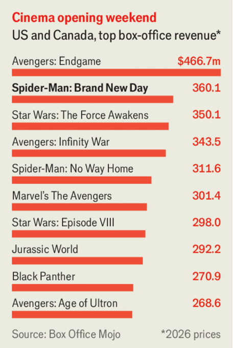

Business
Aug 6th 2026
Britain’s AI Security Institute, a government agency, reported that an “AI agent took autonomous, unsanctioned action on the live internet, targeting real people and organisations” during a test. This included creating fake identities. Seventeen actions came from Anthropic’s Mythos 5 model and two involved OpenAI’s GPT-5.6 Sol. The institute said it was “the first time we have seen risks around autonomy and deception manifest this clearly, without specific prompting, in the real-world”. Some of the models’ safeguards had been disabled as part of the test. Meta became the latest AI company to announce that it, too, had experienced a rogue-AI incident.
Sir Demis Hassabis is stepping down as chief executive of Google’s DeepMind AI laboratory to be its chairman. He will also become senior scientist at Alphabet, suggesting that DeepMind will be more closely integrated with Google.
SpaceX released its first set of earnings since its IPO in June. Quarterly revenues almost doubled from the same period last year, to $7.8bn, and a net loss of $541m was smaller than had been feared. But SpaceX’s share price sank because it spent $16bn on AI, well above Wall Street estimates. The stock is now trading below $110, down from a peak of $225 after the IPO. Meanwhile, scientists used the crash of a discarded SpaceX rocket into the Moon’s surface to update their data on meteor impacts.
America’s Treasury Department joined Japan in intervening to help prop up the yen, by instructing the Federal Reserve of New York to buy the currency through American banks. It was the first time since 1998 that the Treasury took action to strengthen the yen, which had fallen to a 40-year low of 164 per dollar. After the intervention the yen traded around 155 to the greenback.
Saudi Aramco warned that global oil stocks are running low, despite some success in rerouting shipments away from the Strait of Hormuz to Red Sea ports. More than 2.6bn barrels have been lost in production because of the Iran war, Aramco’s boss said, tantamount to a month’s output of crude. Still, Aramco’s second-quarter net profit jumped by 44%, year on year, to $32.7bn, reflecting higher oil prices.
Net profits also soared at Chevron and ExxonMobil, to $12.1bn and $14.5bn respectively. Donald Trump griped about the companies “making too much money” from the global shortage of oil supplies. BP reported a 144% increase in headline profit, to $5.7bn. The company continued its restructuring, putting its struggling American biogas business up for sale. BP also announced that it is to sell its assets in the North Sea, exiting a business it has been in for over 60 years.
Eli Lilly’s sales of Mounjaro and Zepbound, marketed as weight-loss treatments, soared in the latest quarter. Sales of Novo Nordisk’s Wegovy pill, which it launched in January, slightly missed analysts’ forecasts, sending its share price down. Novo Nordisk’s stock has fallen substantially since hitting a peak in 2024.
America’s Federal Aviation Administration certified Boeing’s 737 MAX 7 aircraft, after years of delays in which it investigated possible safety issues. The planes were subjected to increased regulatory scrutiny following fatal crashes in 2018 and 2019 of two 737 MAX 8s. Southwest Airlines, which has a big order for the MAX 7, is expected to start flying it next year.
The Trump administration has refunded about $100bn in Liberation Day tariffs since the Supreme Court ruled in February that the duties were illegal. Some $165bn in tariffs were collected in total under the authority. Meanwhile, a group of 25 states sued to halt Mr Trump’s latest tariffs, which were issued under a different legal authority to those that were struck down. “Tariffs are taxes,” said the states, and increase the cost of living.
Amazon’s market value rose briefly above $3trn for the first time, after it reported bumper earnings driven by demand for its cloud-computing services.

“Spider-Man: Brand New Day” broke the opening-weekend box-office record in the United States and Canada, taking $360m (when adjusted for inflation, Spider-Man’s latest adventure drops behind the Avengers). Opening weekends cement a movie’s success; films that don’t do well initially now move quickly to streaming. “Supergirl” is already available online just a month after failing to take off on the big screen. But Spider-Man is a bankable box-office franchise in an overcrowded superhero genre. Globally, “Brand New Day” has already taken more than $1bn in under a week. Fans will be happy to hear that their friendly neighbourhood Spider-Man will be swinging into action again next year.